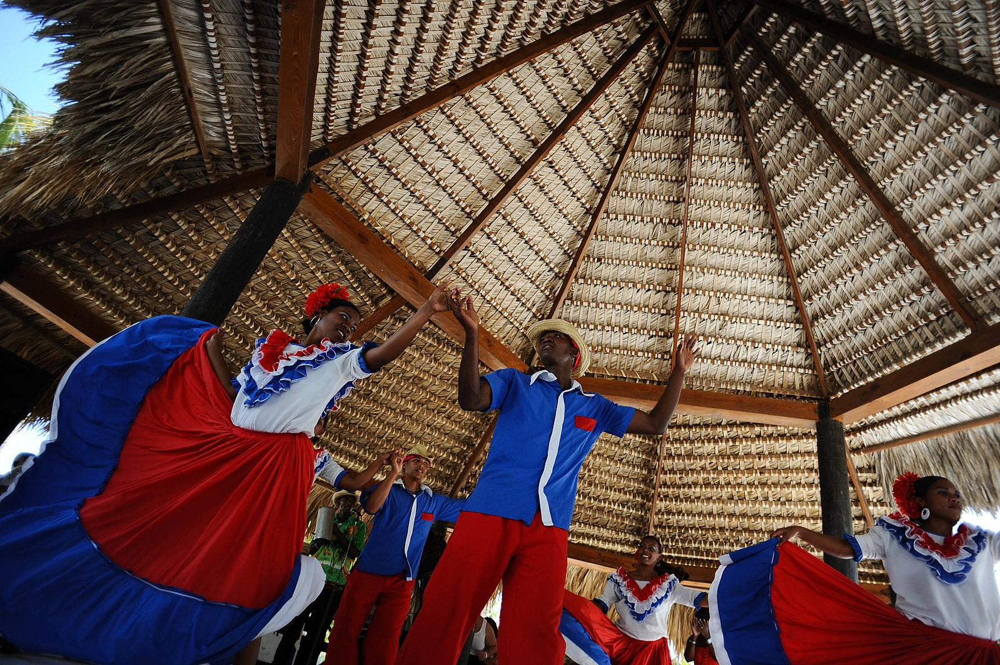
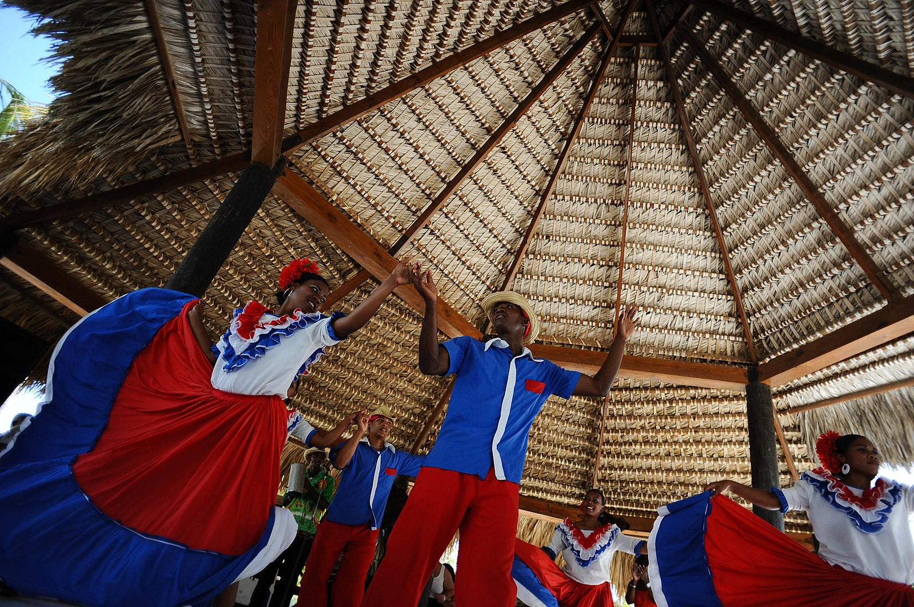

Why visited Dominincan Republic
White beaches and clear weather
European, African, and Taíno cultural elements are most prominent in Dominican food, family structure, religion, and music. Dominicans are welcoming people with a great sense of humor who are happy to share all the things they consider to be muy dominicano. Dominicans are very fond of dancing to merengue and bachata.
25 Interesting Facts About the Dominican Republic The Dominican Republic is very famous for its exceptionally talented baseball players, such as Sammy Sosa, Albert Pujols, and Hall of Famers Juan Marichal, Vladimir Guerrero, Pedro Martinez, and David Ortiz, and for its internationally-popular merengue music and dance.
RESTAURANTS
Best places to eat in la Republica Dominican
Jellyfish Restaurant
A relaxing destination with a premier culinary and unique venue in the Caribbean. Just 20 minutes away from Punta Cana International airport, Jellyfish welcomes you with its distinctive architecture that reflects its natural surroundings. Enjoy this upscale and relaxing beachfront restaurant that highlights fresh locally-sourced ingredients and an eclectic blend of Caribbean, American & European cuisine. At Jellyfish, we invite you to indulge in the flavors as you soak in the soothing sounds of the ocean. Just the destination you seek to sway along with the coconut palms and white sands located in the heart of Bavaro Beach in the Dominican Republic.
Address:
Calle Chicago, Playa Bavaro, Punta Cana 23301
Hours
Monday - Sunday 10:00 AM - 11:00 PM
La Yola
"Enjoy AAA Three Diamond Award-winning La Yola Restaurant, serving the freshest Mediterranean cuisine and seafood in an elegant setting. Modeled on a fishing boat, La Yola restaurant perches on the sea at the Puntacana Resort & Club Marina, with magnificent views of the sparkling turquoise waters."
Address:
Punta Cana 23000, Dominican Republic
Hours
Monday - Sunday 6:30PM - 10:30PM


NacanDR
Bienvenidos a el Restaurante Naca’n, un lugar donde convergen la cultura, el arte y la alta cocina en el corazón de la Ciudad Colonial de Santo Domingo. Un destino vibrante e internacional, punto de acceso galardonado, este lujoso edificio histórico de dos niveles, totalmente restaurado a su arquitectura original que data de 1914, celebra el espíritu moderno de la dominicanidad y su herencia cultural abrazando la cultura indígena. Más allá de un proyecto de una Hospitalidad extrema de ultra lujo, esta joya brilla, en la esquina de las calles Isabel La Católica y Las Mercedes, contribuye al orgullo y los propósitos, de La República Dominicana, el Gran Caribe y más allá.
Address:
C. Isabel La Católica, Santo Domingo 10210, Dominican Republic
Hours
Monday - Wednesday 4:00 PM - 12:00 AM, Thursday & Friday 12:00PM - 12:00 AM, Saturday & Sunday 10:00AM - 12:00AM